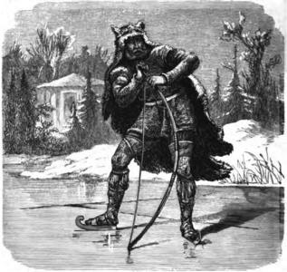

ВАНИ (ВАНИР)
АЕГИР
 Бог на морето. Негова жена е морската богиня Ран.
Те имали девет дъщери - Гялп, Грейп, Ейстла, Ейргява, Ангея, Атла, Улврун, Имд и
Ярнсакса. И деветте заедно, като една същтност, са майки на Хеймдал.
Бог на морето. Негова жена е морската богиня Ран.
Те имали девет дъщери - Гялп, Грейп, Ейстла, Ейргява, Ангея, Атла, Улврун, Имд и
Ярнсакса. И деветте заедно, като една същтност, са майки на Хеймдал.
НИОРД

 Покровител на мореплаването, на риболова, на корабостроенето
и всички морски ветрове му били подвластни. Той бил по-богат от всички ази, а като всички вани
бил много добър. Ниорд е един от дванадесетте главни богове.
Покровител на мореплаването, на риболова, на корабостроенето
и всички морски ветрове му били подвластни. Той бил по-богат от всички ази, а като всички вани
бил много добър. Ниорд е един от дванадесетте главни богове.
УЛ (УЛЕР)

Заварен син на Тор, син на Сиф. Забележителен стрелец с лък.
Стрелите му винаги улучвали целта, независимо колко голяма и колко отдалечена била. Той бил един от
дванадесетте главни богове.
ФРЕЙР (ФРЕЙ)
 Бог на плодородието, син на Ниорд. На Фрейр била
подвластна слънчевата светлина. Той бил могъщ и прекрасен - отстъпвал по красота само на
Балдер. Бил много добър, като баща си Ниорд и покровителствал мира на земята. Фрейр също
бил един от дванадесетте главни богове. Във времената на Рагнарок (Залезът на боговете)
бил убит от огнения великан Сурт.
Бог на плодородието, син на Ниорд. На Фрейр била
подвластна слънчевата светлина. Той бил могъщ и прекрасен - отстъпвал по красота само на
Балдер. Бил много добър, като баща си Ниорд и покровителствал мира на земята. Фрейр също
бил един от дванадесетте главни богове. Във времената на Рагнарок (Залезът на боговете)
бил убит от огнения великан Сурт.
ФРЕЙЯ

 Богиня на любовта, дъщеря на Ниорд и сестра на Фрейр.
В Асгард тя била първа богиня след Фриг. Фрейя нямала равна по красота нито всред боговете,
нито всред хората, а сърцето й било толкова добро и нежно, че съчувствала на всяко страдание.
Когато плачела, от очите й капели златни сълзи. Фрейя била също и предводителка на Валкирийте.
Богиня на любовта, дъщеря на Ниорд и сестра на Фрейр.
В Асгард тя била първа богиня след Фриг. Фрейя нямала равна по красота нито всред боговете,
нито всред хората, а сърцето й било толкова добро и нежно, че съчувствала на всяко страдание.
Когато плачела, от очите й капели златни сълзи. Фрейя била също и предводителка на Валкирийте.